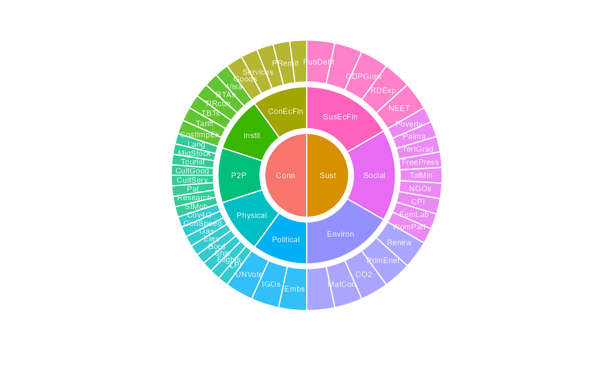

Plots the hierarchical indicator framework. If type = "sunburst" (default), the framework is plotted as a
sunburst plot. If type = "stack" it is plotted as a linear stack. In both cases, the size of each component
is reflected by its weight and the weight of its parent, i.e. its "effective weight" in the framework.
Usage
plot_framework(
coin,
type = "sunburst",
colour_level = NULL,
text_colour = NULL,
text_size = NULL,
transparency = TRUE
)Arguments
- coin
A coin class object
- type
Either
"sunburst"or"stack".- colour_level
The framework level, as an integer, to colour from. See details.
- text_colour
Colour of label text - default
"white".- text_size
Text size of labels, default 2.5
- transparency
If
TRUE, levels belowcolour_levelare differentiated with some transparency.
Details
The colouring of the plot is defined to some extent by the colour_level argument. This should be specified
as an integer between 1 and the highest level in the framework (i.e. the maximum of the iMeta$Level column).
Levels higher than and including colour_level are coloured with individual colours from the standard colour
palette. Any levels below colour_level are coloured with the same colours as their parents, to emphasise
that they belong to the same group, and also to avoid repeating the colour palette. Levels below colour_level
can be additionally differentiated by setting transparency = TRUE which will apply increasing transparency
to lower levels.
This function returns a ggplot2 class object. If you want more control over the appearance of the plot, pass
return the output of this function to a variable, and manipulate this further with ggplot2 commands to e.g.
change colour palette, individual colours, add titles, etc.
See vignette("visualisation) for more details on plotting.
Examples
# build example coin
coin <- build_example_coin(up_to = "new_coin", quietly = TRUE)
# plot framework as sunburst, colouring at level 2 upwards
plot_framework(coin, colour_level = 2, transparency = TRUE)
